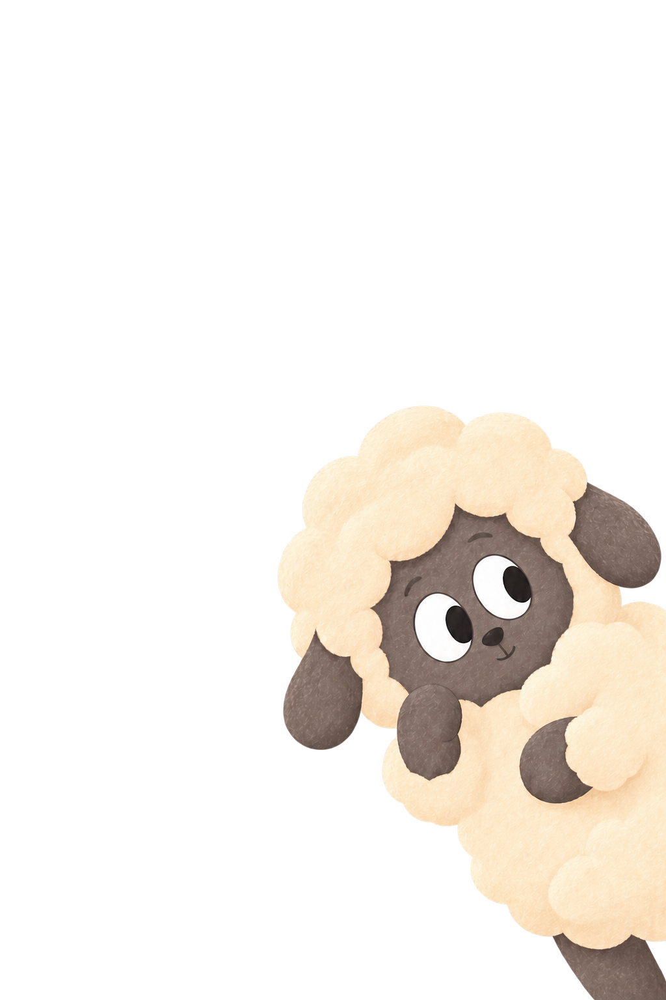

01 Fear of Rejection
One Small Ask
Ask an appropriate person for one small, specific, optional thing that would genuinely make your day easier. Make it easy for them to answer yes or no.

01 Fear of Rejection
Ask an appropriate person for one small, specific, optional thing that would genuinely make your day easier. Make it easy for them to answer yes or no.
